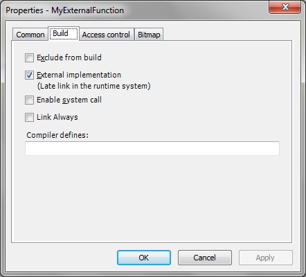

1.10.5. Libraries¶
Libraries being implemented in ANSI-C within the runtime system are called external libraries. However CODESYS V3 will not differentiate any longer between internal and external libraries. Instead each object can be declared as internal or external within the object properties page.
For an external library object, you have to enable the checkbox “External implementation” in the object properties page an here in the Build tab:
In case of an external object, this function will be added to a list of external references which are downloaded and resolved by the runtime.
One external library entry consists of the lower case name of the function (without namespace), the CRC of the interface function and the library version of the containing library.
Therefore functions implemented within the runtime system must have a unique name! Thereby each function or each module of a library may be implemented individually within the runtime system.
The name within the library typically equals the name within the runtime system:
FUNCTION **ExtFunction** : BOOL
VAR_INPUT
dwIn : DWORD;
END_VAR
VAR
END_VAR
The name of an external library function is resolved in lower case in the runtime system! So the name requested in the runtime is: “extfunction“
This external name is configurable. For example, the name of an external function might clash with an IEC identifier. In this case the external function may be decorated with the attribute „external_name”:
{attribute 'external_name' := ' **name_on_rts** '}
FUNCTION ExtFunction : BOOL
VAR_INPUT
dwIn : DWORD;
END_VAR
VAR
END_VAR
In this case the function will not be identified with the function „extfunction” of the runtime system, but with the function name „name_on_rts”.
As there is only one implementation of a function or module within the runtime system, only the library version with exactly this implementation may be used in the project! This is typically realized by the placeholder concept of a library. Therefore an external library is typically deposited in the device description.
How an externa library function is declared in the runtime system, this is declare in the following chapter.
The attribute ‘c-calling-convention’ can be used for the external function to generate the function calls to that function with the calling convention used by the C-Compiler of the runtime system. This attribute is not available for all targets and C-Compilers.
1.10.5.1. Declaration in the runtime system¶
An external library function is declared in the runtime system interface m4-File the following way:
DEF\_API(\`void',\`CDECL',\`extfunction',\`(extfunction\_struct \*p)',1,
0xFFADC096,0x03040500)
This m4-interface macro contains the following segments:
`extfunction’: External function name
`(extfunction_struct *p)’: External function parameter. All parameters (input and result) are collected together in one interface structure! This is a principle in CODESYS V3!
1: Interface function is used as an external library function
0xFFADC096: CRC/Signature of the interface function (datatypes of the parameter, return value, parameter names and name of function)
0x03040500: Version of the containing library. Here: V3.4.5.0
Example:
Declaration in IEC:
// Generated comment for MyExternalFunction
// RETURN: Returns the runtime system error code (see CmpErrors.library)
FUNCTION MyExternalFunction : DINT
VAR_INPUT
// Dummy parameter
p1 : DINT;
END_VAR
VAR
END_VAR
Declaration in the Itf.m4 File:
/**
* Generated comment for MyExternalFunction
* RETURN: Returns the runtime system error code (see CmpErrors.library)
*/
typedef struct tagmyexternalfunction_struct
{
RTS_IEC_DINT p1; /* VAR_INPUT */
/* Dummy parameter */
RTS_IEC_DINT MyExternalFunction; /* VAR_OUTPUT */
} myexternalfunction_struct;
DEF_API(`void’,`CDECL’,`myexternalfunction’,`(myexternalfunction_struct *p)’, 1,0x184DFC0B,0x01000000)
Because this is a very time consuming and error prone job, CODESYS provides an automatical m4 export feature which is declared in the following chapter.
1.10.5.2. CODESYS m4 export feature¶
CODESYS V3 provides the possibility to automatically export all externally implemented functions or methods of a library to a file for the runtime system, so that incompatibilities between the library and the implementation in the runtime system are almost precluded.
In the created interface file (called Itf.m4 file) all externally implemented functions and methods are represented by their names (as defined in CODESYS or specified by the attribute „external_name”), their interfaces, the version of the library and the checksum of the interface.
Via m4 compiler this file has to be translated into an ANSI-C interface Header file. Furthermore CODESYS provides the possibility that a C-Source frame for the implementation is generated.
Within the runtime system the interface header file (<LibraryName>Itf.h) and the source file (<LibraryName>.c) may then be used as base for implementing a component containing the implementation of the external functions or modules. Afterwards this component can be included into the runtime system.
There are few attributes to control the m4 export of an external POU:
| Attribute | Description |
|---|---|
| {attribute ‘hide’} | Hide the POU from visisble in the library and in the m4 file |
| {attribute ‘external_name’ := ‘SysFileClose’} | External name of a POU can be configured. Name is always resolved lower case! |
| {attribute ‘m4export’} | Force the m4 export (e.g. for constanst in GVLs that should be exported as C defines) |
| {attribute ‘m4export_hide’} | Hide from m4 export (no m4 export) |
| {attribute ‘m4export_nosignature’} | Don’t export the signature/CRC (is 0 in this case) |
| {attribute ‘m4export_32bit_nosignature’} | Don’t export a signature on 32-Bit targets to be backward compatible |
| {attribute ‘m4export_64bit_nosignature’} | Don’t export a signature on 64-Bit targets to be backward compatible |
| {attribute ‘m4export_enum-as-C’} | Export an IEC enum as a C enum. This is only supported for typed IEC enums declared as DINT! |
1.10.5.3. Version check of libraries against the runtime system¶
Each library function and each library method of a module being implemented in the runtime system will be checked on version compatibility by the runtime system. Each function and each method of a module will thereby inherit the version of its library.
If the first two digits of this version number (of length 4 digits) do not correspond, the download will be denied and a related error message will be created in CoDeSys. Therefore the version of the (external) library and of its implementation within the runtime system have to match within the first two digits.
1.10.5.4. Signature check of libraries against the runtime system¶
Each library function and each library method of a module being implemented in the runtime system has a defined interface. As only the name of the function or method will be checked by the runtime system, fatal errors culminating in system crashes may occur, if these interfaces do not agree with each other.
This is the reason why a checksum for each function or method is transferred via the interface to the runtime system. By this CRC the runtime system may check the particular implementation.
The checksum of the interface of a function or method contains the data type of the return value as well as name and data type of the parameters.
As the check sum may only be calculated within CODESYS, CODESYS provides the possibility to automatically export all externally implemented functions or methods of a library to a file for the runtime system. You will find this described in detail in chapter 10.5.2.
You can disable the signature check with a 0 in the m4-interface declaration:
DEF_API(`void',`CDECL',`myexternalfunction',`(myexternalfunction_struct *p)', **0**,0x184DFC0B,0x01000000)
Placeholder Libraries:
Within the device description of a PLC an external library must be defined as placeholder. When this placeholder gets included into a project or a library, the real version will be adopted from the device description. Therefore, only the specific version of a library being defined by the device description will be employed.
Important
All libraries containing external implementations have to be included as placeholders, so that the library will always fit to the implementation within the runtime system!
1.10.5.5. Adaptations to Specific Operating Systems or Processors¶
The adaptation to operating systems that are not supported by 3S, the adaptation can be done by your own. For this, we provide source code for all System-Components as a template (under the directory $\Platforms\SysTemplates).
Because each system-component can be implemented and tested separately, the runtime system should run with no error after complete porting.
The most important component is SysTime. The following two functions must be implemented first:
- SysTimeGetMs: With this function, all timeouts are calculated
- SysTimeGetUs: With this function, the scheduler gets its time base to execute the IEC tasks.
Both functions must provide monotonic rising ticks in a millisecond (SysTimeGetMs) and a microsecond (SysTimeGetUs) resolution.
The second important component is the SysMem component. With the component, access to all memory (except static memory) is managed